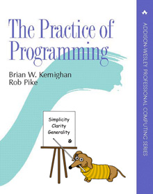

Jez Higgins and Chris Oldwood recommended The Practice of Programming book to me when we were working on an enterprise C++ project. It is from the same vintage as Extreme Programming Explained and Refactoring, but quite different. It is multi-language, but some of the exercises are in C (not surprising, given the authors’ backgrounds). I got started on it last year, but life got in the way, and I needed to practice my C a bit before being able to do anything meaningful in it. Now that Rob and I are prepping for a C++ TDD / Legacy code training next month, I’m in the right frame of mind to also dive deeper into C.

Figure 1: The Practice of Programming book cover.
I showed this to Marc and Rob and they thought it was fun. I’m also sharing some of the failures, following a recent discussion on twitter that people only publish things when they gone well, or when they have been heavily edited. This may lead readers to believe that they could not possibly do such a thing.
The ’logical’ reason is that C is still one of the best languages to maintain existing C programs in. Your house probably runs on a few million lines of C code (in your heating, your ovens, kitchen timers, smart meters, and for me every year since 2000 has been the year of linux on the desktop, and guess what the linux kernel is made of?. My editor may look lispy, but is also built on C). So learning a bit of C is good, even if it just to get over ones’ fear of the unknown.
The illogical reason is that programming in C is like leaving your comfy dwelling, and going camping in a tent, possibly with some thunder storms around. Programming in a language where the unsafe keyword is called int main() is just fun!
If you told me 25 years ago I would say I would program C for relaxation, I might have disagreed. I had been taught program with pointers, but making a mistake often meant a blue screen, and a minutes long reboot of my computer. So I dabbled in C, and soon left for more comfortable environments. In a Unix (this post was written on MacOs and Linux), C’s natural habitat, the experience is different: a segfault just means a message in my editors’ window and another quick try. Computers are now fast enough to compile a bit of C in an instant.
Was working in baby steps. Admittedly, getting evenings full of blue screens and reboots was not very motivating. I figured this out a couple of years later, when I was working in a C++ codebase. The Solaris tooling had a debugger that would let me make some changes in an implementation (.cpp) file, and restart an execution from where it was. I couldn’t believe it was not Smalltalk. I learnt working in baby steps, because the compile times in that project were long, and it took me a month of working like that to get them into a doable state (45 minutes down to 5 or so).
I decided to not leave the comfort of my editor (org-roam inside Doom Emacs), and do literate programming for a bit. This means I can write a bit of code, and write my thoughts about it right where I am. The warm up was easy, refactoring required learning a bit more about org-babel. I’ve put the resources I found useful at the end of the post.
I’ve used this setup before for emacs lisp, but not for C, so I wasn’t sure what to expect. Let’s start with hello world.
printf("Hello org-babel again!");
Pressing ctrl-c, ctrl-c generates a main() function, builds it, and if successful, runs it. And puts the results in the text. So far so good. That was easy, and got me hooked into doing more of it.
I’m using Doom Emacs, installing things like C compilers and wiring them up is relatively easy, as Doom doctor told me which bits I was missing. The C, C++, D Source Code Blocks in Org Mode documentation got me through the first couple of code blocks.
This is a kind of magic, it also works on mac, and I don’t even know which C compiler was used. Instead of typing commands, I can edit code live, and see the results instantly. Fast feedback is fun.
I wanted to do an exercise around quicksort from the book, but first, how can I use variables and stuff in my code.
+name: and :var let us name a program and pass a parameter to it.
printf("%d", x * x);
64
One of the more ’tent’ like aspects of C is that it does not have a package manager. There is Theft - Property-Based Testing for C, but I thought i’d get to installing that later. Having a list of numbers as input would be good enough to start with.
I started with a table with just one column. org-mode graciously adds a header when calling org-create-table, so in good C style I used one letter for the header, as it is just a bunch of numbers.
| n |
|---|
| 2000 |
| 10 |
| 300 |
Let’s just print the numbers, and see what we got, passing our named table as :var. I renamed it to highlight what is source and destination.
I wanted to print the cell contents, copying some code out of documentation I found. But I got segfaults instead. So I took a step back, and print just the row numbers, to see that we can get a table as output:
#include "stdlib.h" #include "stdio.h" int main() { for (int i=0; i<somedata_rows; i++) { printf ("%2d ", i); // print the column number // here I wanted to print the cell contents, but got segfaults on my initial code. printf("\n"); } return 0; }
| 0 |
| 1 |
| 2 |
Tapping C-c C-v v, per the manual, gives us the generated source code. We get a two dimensional array out. Here is part of the generated code that shows our ’unsorted’ as ’somedata’.
int somedata[3][1] = { {1}, {10}, {3} }; const int somedata_rows = 3; const int somedata_cols = 1;
Our table has been turned into a two-dimensional array, with the rows first, and the columns second. We are only interested in one column
narrator: To prevent a segfault, willem should have read the copy-pasted types more closely, that would have saved him some debugging time. Using org syntax for the table did save him from looking up how to write this bit of boilerplate out in C.
Rob later pointed out that a two-dimensional array in C is just a figment of your imagination. Nothing is stopping you from accessing it as a one dimensional array, or even a struct, if you feel so inclined.
The previous was an iteration of many steps. I kept getting segfaults when trying to print the cell. So I was tempted to break out a debugger, since print driven development does not seem to work for me here.
But stepping away for a bit, and actually reading the code that I dilligently copy pasted… the column has already been converted to ints.
Since printf is stringly typed, we don’t get a compiler error, but a segfault.
The code I pasted had const char* for the cell. We don’t have char pointers (also known as strings) here, we have ints. So when we write that correctly, we can print the values.
#include "stdlib.h" #include "stdio.h" int main() { for (int i=0; i<somedata_rows; i++) { printf ("%2d ", i); printf("%2d ", somedata_cols); // should have called this row, but kept name from documentation code... int j=0; const int cell = somedata[i][j]; printf("%2d ", cell); printf("\n"); } return 0; }
| 0 | 1 | 2000 |
| 1 | 1 | 10 |
| 2 | 1 | 300 |
Ok, so we know how to input, and output a table of numbers. We can use this as a kind of example based test for our QuickSort.
So The Practice Of Programming has a QuickSort example, and asks the reader to convert it from recursive to iterative. In C. I managed to sketch out an iterative example on paper, but I know too little of allocation in C to do that in one go. A baby step would be to convert the recursive calls to pushes on our own stack, and iterate until the stack is empty. Starting off with pushing the initial interval on the stack.
An optimization could then be to keep currentinterval, and only push the right hand side of the division on the stack. But we’d need some kind of test. Tables are a nice start. Further on in the book, they remark there is a standard implementation called ’qsort’.
So lets’ start with using qsort from the standard library. Ths took me a couple of tries, I had accidentally put my #include s inside the main. It requires a comparator function. The book, provided icmp, so I typed that in:
#include "stdlib.h" #include "stdio.h" /* icmp: integer compare of *p1 and *p2 */ int icmp(const char * p1, const char * p2) { int v1, v2; v1 = *p1; v2 = *p2; if (v1 < v2) return -1; else if (v1 == v2) return 0; else return 1; } int main() { const int N = 3; int arr[3] = { -100, 10, 3 }; qsort(arr, N, sizeof(int), icmp ); // qsort modifies arr in place, and we can't // return a list from main. so print it instead for(int i=0; i<N;i++) { printf("%2d ", arr[i]); printf("\n"); // newline gives us the table rendering } }
| -100 |
| 3 |
| 10 |
So, we can call a library function. C doesn’t come with much out of the box, don’t try finding data structures such as a stack in it. This was common for mainstream languages up until about Java. But we have qsort, so we can build the scaffolding we need for our own version of it.
Extract out icmp in its’ own org-mode block, so I don’t have to repeat it all the time:
/* icmp: integer compare of *p1 and *p2 */ int icmp(const void * p1, const void * p2) { int v1, v2; v1 = *(int *) p1; v2 = *(int *) p2; if (v1 < v2) return -1; else if (v1 == v2) return 0; else return 1; }
This broke down, and was a large step, as it was / is not obvious how to export just some code to a file, in the same location as the next block.
Eventually, I got it working, after Four browser tabs. I almost gave up - there is always the option to use .h and .c files in an IDE, and not use literate programming for learning. Almost, I am glad I got this working. The :tangle headers above are now unnecessary. The :exports header prevents execution of the code block, which is useful, as there is nothing to execute. I’ll leave them in the text as evidence of my going around in circles.~
Cool, we have a function. Now we need to tell org-babel how to use it. <<icmp>> works, as long as we have the :noweb yes header in both the source and destination block.
I sort of started almost writing a test there, at the top of main. Some sample data to kick off the sort. I didn’t use org-mode for a table, because I got all rows, and didn’t want to do array manipulation just to get some data.
Stepping away from the keyboard, I realised that if I layed out the table in org-mode horizontally, I didn’t need much magic. Now for our horizontal table:
| 1 | 0 | -100 | 10 | 420 |
Then assign it to the variable we had before, so we can take a tiny step.
Let’s give this block a separate name, otherwise the RESULTS block will end up with the previous one.
#include "stdlib.h" #include "stdio.h" /* icmp: integer compare of *p1 and *p2 */ int icmp(const void * p1, const void * p2) { int v1, v2; v1 = *(int *) p1; v2 = *(int *) p2; if (v1 < v2) return -1; else if (v1 == v2) return 0; else return 1; } int main() { int N = 5; // get the first row of our one-row table int* arr = unsorted[0]; qsort(arr, N, sizeof(int), icmp ); // print the array for(int i=0; i<N;i++) { printf("%2d ", arr[i]); } printf("\n"); }
-100 0 1 10 420
And it works as expected, all nicely sorted :-).
So this post isn’t even going to make it to QuickSort by the book. I showed the above to Rob and Marc yesterday, and we had some more fun. Marc and I learnt C in trial by fire style, as part of our operating systems class in Uni. ’but we don’t know C’, ’You’ll pick it up’. Rob was actually taught C for a whole two weeks (not much, given the care one needs to use it safely. ).
Anyway. Marc and Rob remembered some things to make the code more interesting, and in some cases, tidier. So the const void * in the icmp parameter list could be const int *
aside: reading the symbols aloud
I notice I’m not reading
const int starbutconst int pointer. Reading the symbols out loud (for some definition of out loud) helps in understanding the code while you read. I’m pointing this out, because I forgot about this while practicing Haskell, and a freshly graduated hire that I was on-boarding through bits of pair-programming asked me what I called the symbols. After about two symbols I went ehhh… and had to look up the documentation. C and C++ code can be equally cryptic, verbalising the symbols can help reinforce your understanding of the code. When you don’t know how to pronounce a symbol, look it up.
Mind you, I’m not saying ’curly brace’, there are limits. Maybe I should try that some time.
Anyway, changing the coid pointers to int pointers allows us to get rid of a cast, so v1 = *(int *) p1 becomes v1 = *p1. Since I got the definition of icmp from The Practice Of Programming , there may be something we overlooked here, let us know if you know what it is.
I find it interesting that the only place in qsort where the type of the actual data is needed is the icmp function. When I learnt C I thought function pointers, like icmp here, were some kind of voodoo. After wrting endless collect: (smalltalk, ruby) blocks, folds and traverses (Haskell, Purescript) and similar in Python, C# and finally even Java it is now an oasis of calm in a sea of void pointers and typecasts.
Another thing I didn’t like about my solution above, with the array in the code, was that I failed to get rid of the magic number ’3’ for the size of the array. I hadn’t figured out how to use N instead.
Marc found an answer, and then we iterated on it. “If you make that N a const, then you can use it in the array inialiser” Marc said.
const int N = 3; int arr[N] = { -100, 10, 3 };
That compiles, and more importantly, works. We still weren’t as happy with the 3 there. It is duplicated implicitly, since we have 3 items in the array, and we write it in the const declaration. Can we find out the length of the array? “Yes we can” goes Rob. But it is not what you think it is. I go: I don’t think there is ’length’, or ’len’ since typing ’th’ would surely be too strenuous. Let alone reading it. Rob came up with this gem:
int arr[] = { 42, -100, 10, 3 }; const int N = sizeof(arr) / sizeof(int);
The size in the array initializer is not needed. I just got sucked in by the overly communicative code generated by org-mode.
Narrator: this was snark, there is no such thing as being overly communicative in code. Willem found comfort in seeing the dimensions of the table he had in text reflected in the generated code.
sizeof(arr) / sizeof(int) I don’t know how Rob came up with this, I hadn’t seen it before. Brilliant, if a bit scary. It should be fine, assuming we don’t have zero sized integers, and the array’s size is a clean multiple of the size of the int.
Meanwhile I’m changing some of the numbers each time, just to be sure the code is actually run. Focusing on one thing at a time is hard, and I still am not fully confident in my code-in-org-mode abilities.
The reason we have to pass the length of the array to qsort is probably that we can’t pass the name of our type int as a a parameter, so qsort has no way to ask the length of the array.
Anwyay, having our int pointers makes it more obvious what is going on here. In C, usually pointers have the same size as integers. Qsort doesn’t care if we sort pointers to structs, or integers, as long as it gets it’s icmp. So we dereference our fake int pointer to an int v1 = *p1; and everyone is happy.
We’ll extract the printing code into its’ own print_array function, in its’ own
block, it is getting a bit repetitive.
#include "stdio.h" /* print_array: print an array of integers of length N to stdout */ void print_array(const int* xs, int N) { for(int i=0; i<N;i++) { printf("%2d ", xs[i]); } printf("\n"); }
#include "stdlib.h" #include "stdio.h" /* icmp: integer compare of *p1 and *p2 */ int icmp(const void * p1, const void * p2) { int v1, v2; v1 = *(int *) p1; v2 = *(int *) p2; if (v1 < v2) return -1; else if (v1 == v2) return 0; else return 1; } #include "stdio.h" /* print_array: print an array of integers of length N to stdout */ void print_array(const int* xs, int N) { for(int i=0; i<N;i++) { printf("%2d ", xs[i]); } printf("\n"); } int main() { int arr[] = { 20000, 1, 42, -100, 10, 3 }; const int N = sizeof(arr) / sizeof(int); qsort(arr, N, sizeof(int), icmp ); print_array(arr, N); }
-100 1 3 10 42 20000
Documenting my steps helped here already. I had forgotten how to include blocks like
<<icmp>>and<<print_array>>. My notes above said I need :noweb yes.
and using header arguments.
more useful for evaluating code than combining multiple blocks. I did learn about the :cache header for caching output that takes a long time to compute, only updating it when the source code block changes. I didn’t need it here, but useful for future reference. C, C++, D Source Code Blocks in Org Mode This is the one I started with. Very useful, but doesn’t have the information on reusing code from another block.
I still would like to know how to output icmp to its’ own .h file, and use that in another block.
(probably: training courses, also available in C++)
generated css for inspiration:
<style type="text/css"> <!--/*--><![CDATA[/*><!--*/ .title { text-align: center; margin-bottom: .2em; } .subtitle { text-align: center; font-size: medium; font-weight: bold; margin-top:0; } .todo { font-family: monospace; color: red; } .done { font-family: monospace; color: green; } .priority { font-family: monospace; color: orange; } .tag { background-color: #eee; font-family: monospace; padding: 2px; font-size: 80%; font-weight: normal; } .timestamp { color: #bebebe; } .timestamp-kwd { color: #5f9ea0; } .org-right { margin-left: auto; margin-right: 0px; text-align: right; } .org-left { margin-left: 0px; margin-right: auto; text-align: left; } .org-center { margin-left: auto; margin-right: auto; text-align: center; } .underline { text-decoration: underline; } #postamble p, #preamble p { font-size: 90%; margin: .2em; } p.verse { margin-left: 3%; } pre { border: 1px solid #ccc; box-shadow: 3px 3px 3px #eee; padding: 8pt; font-family: monospace; overflow: auto; margin: 1.2em; } pre.src { position: relative; overflow: auto; padding-top: 1.2em; } pre.src:before { display: none; position: absolute; background-color: white; top: -10px; right: 10px; padding: 3px; border: 1px solid black; } pre.src:hover:before { display: inline; margin-top: 14px;} /* Languages per Org manual */ pre.src-asymptote:before { content: 'Asymptote'; } pre.src-awk:before { content: 'Awk'; } pre.src-C:before { content: 'C'; } /* pre.src-C++ doesn't work in CSS */ pre.src-clojure:before { content: 'Clojure'; } pre.src-css:before { content: 'CSS'; } pre.src-D:before { content: 'D'; } pre.src-ditaa:before { content: 'ditaa'; } pre.src-dot:before { content: 'Graphviz'; } pre.src-calc:before { content: 'Emacs Calc'; } pre.src-emacs-lisp:before { content: 'Emacs Lisp'; } pre.src-fortran:before { content: 'Fortran'; } pre.src-gnuplot:before { content: 'gnuplot'; } pre.src-haskell:before { content: 'Haskell'; } pre.src-hledger:before { content: 'hledger'; } pre.src-java:before { content: 'Java'; } pre.src-js:before { content: 'Javascript'; } pre.src-latex:before { content: 'LaTeX'; } pre.src-ledger:before { content: 'Ledger'; } pre.src-lisp:before { content: 'Lisp'; } pre.src-lilypond:before { content: 'Lilypond'; } pre.src-lua:before { content: 'Lua'; } pre.src-matlab:before { content: 'MATLAB'; } pre.src-mscgen:before { content: 'Mscgen'; } pre.src-ocaml:before { content: 'Objective Caml'; } pre.src-octave:before { content: 'Octave'; } pre.src-org:before { content: 'Org mode'; } pre.src-oz:before { content: 'OZ'; } pre.src-plantuml:before { content: 'Plantuml'; } pre.src-processing:before { content: 'Processing.js'; } pre.src-python:before { content: 'Python'; } pre.src-R:before { content: 'R'; } pre.src-ruby:before { content: 'Ruby'; } pre.src-sass:before { content: 'Sass'; } pre.src-scheme:before { content: 'Scheme'; } pre.src-screen:before { content: 'Gnu Screen'; } pre.src-sed:before { content: 'Sed'; } pre.src-sh:before { content: 'shell'; } pre.src-sql:before { content: 'SQL'; } pre.src-sqlite:before { content: 'SQLite'; } /* additional languages in org.el's org-babel-load-languages alist */ pre.src-forth:before { content: 'Forth'; } pre.src-io:before { content: 'IO'; } pre.src-J:before { content: 'J'; } pre.src-makefile:before { content: 'Makefile'; } pre.src-maxima:before { content: 'Maxima'; } pre.src-perl:before { content: 'Perl'; } pre.src-picolisp:before { content: 'Pico Lisp'; } pre.src-scala:before { content: 'Scala'; } pre.src-shell:before { content: 'Shell Script'; } pre.src-ebnf2ps:before { content: 'ebfn2ps'; } /* additional language identifiers per "defun org-babel-execute" in ob-*.el */ pre.src-cpp:before { content: 'C++'; } pre.src-abc:before { content: 'ABC'; } pre.src-coq:before { content: 'Coq'; } pre.src-groovy:before { content: 'Groovy'; } /* additional language identifiers from org-babel-shell-names in ob-shell.el: ob-shell is the only babel language using a lambda to put the execution function name together. */ pre.src-bash:before { content: 'bash'; } pre.src-csh:before { content: 'csh'; } pre.src-ash:before { content: 'ash'; } pre.src-dash:before { content: 'dash'; } pre.src-ksh:before { content: 'ksh'; } pre.src-mksh:before { content: 'mksh'; } pre.src-posh:before { content: 'posh'; } /* Additional Emacs modes also supported by the LaTeX listings package */ pre.src-ada:before { content: 'Ada'; } pre.src-asm:before { content: 'Assembler'; } pre.src-caml:before { content: 'Caml'; } pre.src-delphi:before { content: 'Delphi'; } pre.src-html:before { content: 'HTML'; } pre.src-idl:before { content: 'IDL'; } pre.src-mercury:before { content: 'Mercury'; } pre.src-metapost:before { content: 'MetaPost'; } pre.src-modula-2:before { content: 'Modula-2'; } pre.src-pascal:before { content: 'Pascal'; } pre.src-ps:before { content: 'PostScript'; } pre.src-prolog:before { content: 'Prolog'; } pre.src-simula:before { content: 'Simula'; } pre.src-tcl:before { content: 'tcl'; } pre.src-tex:before { content: 'TeX'; } pre.src-plain-tex:before { content: 'Plain TeX'; } pre.src-verilog:before { content: 'Verilog'; } pre.src-vhdl:before { content: 'VHDL'; } pre.src-xml:before { content: 'XML'; } pre.src-nxml:before { content: 'XML'; } /* add a generic configuration mode; LaTeX export needs an additional (add-to-list 'org-latex-listings-langs '(conf " ")) in .emacs */ pre.src-conf:before { content: 'Configuration File'; } table { border-collapse:collapse; } caption.t-above { caption-side: top; } caption.t-bottom { caption-side: bottom; } td, th { vertical-align:top; } th.org-right { text-align: center; } th.org-left { text-align: center; } th.org-center { text-align: center; } td.org-right { text-align: right; } td.org-left { text-align: left; } td.org-center { text-align: center; } dt { font-weight: bold; } .footpara { display: inline; } .footdef { margin-bottom: 1em; } .figure { padding: 1em; } .figure p { text-align: center; } .equation-container { display: table; text-align: center; width: 100%; } .equation { vertical-align: middle; } .equation-label { display: table-cell; text-align: right; vertical-align: middle; } .inlinetask { padding: 10px; border: 2px solid gray; margin: 10px; background: #ffffcc; } #org-div-home-and-up { text-align: right; font-size: 70%; white-space: nowrap; } textarea { overflow-x: auto; } .linenr { font-size: smaller } .code-highlighted { background-color: #ffff00; } .org-info-js_info-navigation { border-style: none; } #org-info-js_console-label { font-size: 10px; font-weight: bold; white-space: nowrap; } .org-info-js_search-highlight { background-color: #ffff00; color: #000000; font-weight: bold; } .org-svg { width: 90%; } /*]]>*/--> </style>